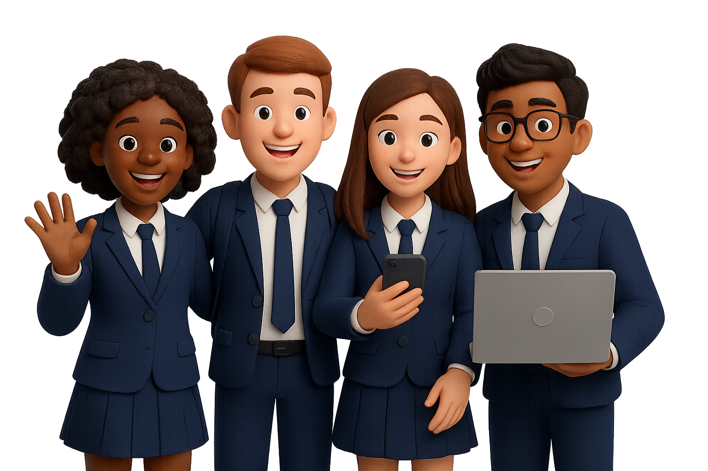

EL COLEGIO
Misión
Promover el desarrollo humano y multicultural de la comunidad educativa, así como una mejor calidad de vida fundamentada en el respeto a la dignidad de las personas y en la prevalencia del interés general conforme al marco legal vigente, propendiendo por una formación integral, orientada al fortalecimiento de la capacidad para crear y construir individual y socialmente conocimientos y convivencia armónica; fortaleciendo la visión de futuro y la conciencia de existir y trascender, en términos de reciprocidad e interdependencia con su entorno.


Visión
Consolidar el desarrollo de un modelo y enfoque pedagógico propio que guiará y articulará las dimensiones: cognitiva, socio-afectiva, motriz, ética-moral y estética, inmersas en los procesos de enseñanza - aprendizaje propias de la institución. Todo lo anterior conllevará a la renovación y actualización del currículo, donde aspectos relevantes para la institución como: La alta calidad académica, lo ético y moral, desarrollados desde una política interna de gestión de calidad, hará la diferencia, consiguiendo, como efecto, el posicionamiento del colegio, a nivel regional y nacional, y el reconocimiento del mismo, en todo el sector educativo y social, como una de las instituciones educativas más exitosas e importantes del país.
Objetivos
1. Fortalecer la fundamentación conceptual y metodológica del enfoque pedagógico y didáctico, así como la articulación e integración entre los diferentes componentes y áreas que ayudan a la formación integral.
2. Favorecer la formación integral y satisfacer las necesidades de educación basada en el Liderazgo, para estudiantes de cualquier parte del País y del mundo, brindándoles oportunidades y espacios de aprendizaje, comunicación, interacción e integración social, que promuevan el desarrollo de sus potencialidades y aspiraciones.
3. Hacer de la práctica y de la relación pedagógica un objeto de reflexión e innovación permanente.
4. Fortalecer la personalidad, el carácter y el intelecto de los estudiantes mediante la generación de procesos formativos y pedagógicos que permitan desarrollar todas las dimensiones vitales del ser humano.
5. Incorporar la investigación y la innovación en el quehacer diario del Colegio Nuestra Señora De Fatima, como motor del desarrollo académico, mediante la generación de conocimiento propio y el aprovechamiento de los avances de la ciencia y la tecnología.
6. Brindar a la Comunidad del Colegio Nuestra Señora De Fatima la oportunidad de interactuar y participar en los proyectos institucionales de manera innovadora y asertiva con identidad institucional.
7. Desarrollar programas de mejoramiento continuo que permitan mantener los estándares de calidad alcanzados en la institución en su proceso de certificación.
8. Formar al estudiante con valores de solidaridad, tolerancia y respeto, brindando espacios sociales y educativos de responsabilidad y autorregulación, dentro de un marco de argumentación, consenso y acatamiento a las normas y acuerdos establecidos.